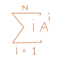

|
VERY EASY !!! |
Most of the times, the students of Computer Science & Engineering of BUET deal with bogus, tough and very complex formulae. That is why, sometimes, even for a easy problem they think very hard and make the problem much complex to solve. But, the team members of the team "BUET PESSIMISTIC" are the only exceptions. Just like the opposite manner, they treat every hard problem as easy and so cannot do well in any contest. Today, they try to solve a series but fail for treating it as hard. Let them help.
Just try to determine the answer for the following series

You are given the value of N and A (integer, 1<=N<=150 & integer, 0<=A<=15) respectively.
For each line of the input, your correct program should output the integer value of the sum in separate lines for each pair of values of N & A.
3 3 4 4
102 1252
Anupam Bhattacharjee ( BUET PESSIMISTIC )
E means exponent, E means error. So try to avoid exponent whenever possible.